Multi-Agent Simulation¶
-
class
crowddynamics.simulation.multiagent.MultiAgentSimulation(configfile='/home/jaan/Projects/CrowdDynamics/crowddynamics/conf/multiagent.cfg', *args, **kwargs)[source] Constructing a multi-agent simulation
- Field
- Instance of
Field. - Agents
- Instance of
Agents. - Logic
- Logic of the simulation consists of tree of
LogicNode. Simulation is updated by calling the update function of each logic node using post-order traversal.
Field¶
-
class
crowddynamics.simulation.multiagent.Field(*args, **kwargs)[source] Multi-Agent simulation Field consists of
![\draw[color=gray!20] (-2, -1) grid (12, 7);
% Domain
\fill[gray!20] (0, 0) rectangle (10, 6);
\node[] () at (5, 3) {$ \Omega $};
% Spawn 0
\fill[blue!20] (0, 3) -- ++(2, 0) -- ++(1, 1) -- ++(0, 2)
-- ++(-3, 0) -- ++(0, -3);
\node[] () at (1.5, 4.5) {$ \mathcal{S}_0 $};
% Spawn 1
\fill[blue!20] (3, 0) -- ++(0, 1) -- ++(1, 1) -- ++(2, 0) -- ++(1, -1)
-- ++(0, -1);
\node[] () at (5, 0.5) {$ \mathcal{S}_1 $};
% Obstacles
\draw[thick] (0, 0) rectangle (10, 6);
\draw[fill=black] (9, 2) circle (0.5);
\draw[fill=black] (9, 4) circle (0.5);
% Room 1
\draw[thick] (0, 3) -- ++(2, 0) -- ++(1, 1);
\draw[thick] (3, 5) -- ++(0, 1);
% Target 0
\draw[thick, white] (4, 6) -- ++(2, 0);
\draw[thick, dashed] (4, 6) -- node[above] {$ \mathcal{E}_0 $} ++(2, 0);
% Target 1
\draw[thick, white] (10, 2) -- ++(0, 2);
\draw[thick, dashed] (10, 2) -- node[right] {$ \mathcal{E}_1 $} ++(0, 2);](_images/tikz-0f44439ad94496fb021d93a98ad69515e6fa5cc3.png)
Example of Field
- Domain
- Domain \(\Omega \subset \mathbb{R}^{2}\) is a plane that contains all the other objects in the simulation such as agents and obstacles. Agents that move outside the domain will be marked as inactive and not used to compute any of the simulation logic.
- Obstacles
- Obstacles \(\mathcal{O} \subset \Omega\) are impassable regions of the domain. Agents have have psychological tendency to try to avoid colliding with an obstacle, but if they do, for example being pushed by other agents, there will be friction force between the agent and the obstacles. Obstacles avoidance is handled by a navigation algorithm.
- Targets
- Targets \(\mathcal{E}_i \subset \Omega\) for \(i \in \{0, ..., m-1\}\) are passable regions of the domain. Agents can have a psychological tendency to try to reach one or more of these regions. This psycological tendency is also handled by a navigation algorithm.
- Spawns
- Spawns \(\mathcal{S}_j \subset \Omega\) for \(j \in \{0, ..., n-1\}\) are passable regions of the domain. These are the regions where new agents can be placed in the beginning or during the simulation. Polygon sampling algorithm handles the sampling of new potential points for placing the agent and then algorithm test that the agent does not overlap with other agents of obstacles. If it doesn’t new agent is placed here.
Agents¶
-
class
crowddynamics.simulation.multiagent.Agents(size, agent_type='circular', agent_cfg='/home/jaan/Projects/CrowdDynamics/crowddynamics/conf/agent.cfg', agent_cfg_spec='/home/jaan/Projects/CrowdDynamics/crowddynamics/conf/agent_spec.cfg')[source] Multi-Agent simulation agent types. Modelled as rigid bodies.
- Circular

Circular agents are modelled as a disk with radius \(r > 0\) from the center of mass \(\mathbf{x}\). This type of agents do not have orientation. This is the simplest model for an agent and works quite well for sparse and medium density crowds, but modelling higher density crowds with this model can be unrealistic because circular model is too wide in the perpendicular width compared to three-circle or capsule representations and lacks the ability change orientation to fit through smaller spaces. [Helbing2000a]
- Three-Circle
![\begin{scope}[scale=3]
\draw[color=gray!20] (-2, -1) grid (2, 1);
\draw[thick] (0, 0) circle (0.59);
\draw[thick] (-0.63, 0) circle (0.37);
\draw[thick] (0.63, 0) circle (0.37);
\fill[gray!20, opacity=0.5] (0, 0) circle (0.59);
\fill[gray!20, opacity=0.5] (-0.63, 0) circle (0.37);
\fill[gray!20, opacity=0.5] (0.63, 0) circle (0.37);
\node[below] () at (0, 0) {$ \mathbf{x} $};
\fill (0, 0) circle(0.5pt);
\fill (-0.63, 0) circle(0.5pt);
\fill (0.63, 0) circle(0.5pt);
\draw[dashed, <->] (0, 0) -- node[above] {$ r_{t} $} ++(135:0.59);
\draw[dashed, <->] (-0.63, 0) -- node[above] {$ r_{s} $} ++(135:0.37);
\draw[dashed, <->] (0.63, 0) -- node[above] {$ r_{s} $} ++(45:0.37);
\draw[dashed, <->] (0, 0) -- node[above] {$ r_{ts} $} (-0.63, 0);
\draw[dashed, <->] (0, 0) -- node[above] {$ r_{ts} $} (0.63, 0);
%\draw[thick, ->] (0, 0) -- node[left] {$ \mathbf{\hat{e}_n} $} (0, 0.3);
%\draw[thick, ->] (0, 0) -- node[below] {$ \mathbf{\hat{e}_t} $} (0.3, 0);
\end{scope}](_images/tikz-1178fa2b5519daa20fc43cdaac6a4ab138c20828.png)
Three-circle agents are modelled as three disks representing the torso and two shoulders of an average human. Torso is a disk with radius \(r_t > 0\) from the center of mass \(\mathbf{x}\). Two shoulders are disks with radius \(r_s\) located at along the tangents at distance \(r_{ts}\) from the center of mass \(\mathbf{x} \pm r_{ts} \mathbf{\hat{e}_t}\), where \(\mathbf{\hat{e}_t} = [\sin(\varphi), -\cos(\varphi)]\). Three circle type has orientation of \(\varphi\). Model was proposed Crowd dynamics discrete element multi-circle model [Langston2006] and has been used for example in FDS+EVAC [Korhonen2008b].
- Capsule
Note
Capsule is not implemented yet
![\begin{scope}[scale=3]
\draw[color=gray!20] (-2, -1) grid (2, 1);
\draw[thick] (0.5, 0.5) arc (90:-90:0.5)
-- ++(-1, 0) arc (270:90:0.5)
-- ++(1, 0);
\fill[gray!20, opacity=0.5] (0.5, 0.5) arc (90:-90:0.5)
-- ++(-1, 0) arc (270:90:0.5)
-- ++(1, 0);
\node[below] () at (0, 0) {$ \mathbf{x} $};
\fill (0, 0) circle(0.5pt);
\fill (-0.5, 0) circle(0.5pt);
\fill (0.5, 0) circle(0.5pt);
\draw[thick] (-0.5, 0) -- (0.5, 0);
\draw[dashed, <->] (-0.5, 0) -- node[above] {$ r $} ++(135:0.5);
\draw[dashed, <->] (-0.5, -0.2) -- node[below]{$ w $} (0.5, -0.2);
%\draw[thick, ->] (0, 0) -- node[left] {$ \mathbf{\hat{e}_n} $} (0, 0.3);
%\draw[thick, ->] (0, 0) -- node[below] {$ \mathbf{\hat{e}_t} $} (0.3, 0);
\end{scope}](_images/tikz-713c55955f021dc73d4d99b979805277b79e0f64.png)
Capsule shaped model used in Dense Crowds of Virtual Humans [Stuvel2016] and Simulating competitive egress of noncircular pedestrians [Hidalgo2017].
\[\begin{split}r &= T / 2 \\ w &= W - 2 r\end{split}\]where
- \(T\) is the thickness of the chest
- \(W\) is the width of the chest
Logic¶
-
class
crowddynamics.simulation.multiagent.LogicNode(simulation)[source] Simulation logic is programmed as a tree of dependencies of the order of the execution. For example simulation’s logic tree could look like:
Reset └── Integrator ├── Fluctuation ├── Adjusting │ ├── Navigation │ └── Orientation ├── AgentAgentInteractions └── AgentObstacleInteractionsIn this tree we can notice the dependencies. For example before using updating Adjusting node we need to update Navigation and Orientation nodes.
References¶
| [Helbing2000a] | Helbing, D., Farkas, I., & Vicsek, T. (2000). Simulating dynamical features of escape panic. Nature, 407(6803), 487–490. http://doi.org/10.1038/35035023 |
| [Langston2006] | Langston, P. A., Masling, R., & Asmar, B. N. (2006). Crowd dynamics discrete element multi-circle model. Safety Science. http://doi.org/10.1016/j.ssci.2005.11.007 |
| [Korhonen2008b] | Korhonen, T., Hostikka, S., Heliövaara, S., & Ehtamo, H. (2008). FDS+ Evac: An Agent Based Fire Evacuation Model. Pedestrian and Evacuation Dynamics 2008, 109–120. http://doi.org/10.1007/978-3-642-04504-2 |
| [Karamouzas2014b] | Karamouzas, I., Skinner, B., & Guy, S. J. (2014). Universal power law governing pedestrian interactions. Physical Review Letters. http://doi.org/10.1103/PhysRevLett.113.238701 |
| [Stuvel2016] | Stüvel, S. A. (2016). Dense Crowds of Virtual Humans. |
| [Hidalgo2017] | Hidalgo, R. C., Parisi, D. R., & Zuriguel, I. (2017). Simulating competitive egress of noncircular pedestrians. PHYSICAL REVIEW E, 95. https://doi.org/10.1103/PhysRevE.95.042319 |